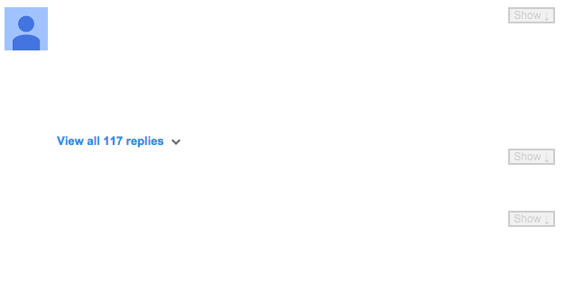

Don't Read the Comments! Help
Thank you for installing Don't Read The Comments!.
Don't Read The Comments! is a browser extension which hides comment sections. It's configurable to work with any site and comes with settings for many sites built-in.
DRTC! is highly customizable, but you don't need to do any of that to get started. In fact, it's already running! To customize when and how DRTC! hides comments, check out the options page. For more details about how to use DRTC!, see the help page.
You can find those pages at any time by opening the DRTC! page action by clicking the yellow diamond icon in the Chrome omnibar, and clicking the links at the top.
DRTC! In Action

DRTC! works by simply placing an opaque cover over the comments section of the page you're viewing. The comments are still there; if you want to see them you can click the Show control in the top right.
DRTC! can also be set to hide individual comments, and optionally show the less profane or abusive ones, using the Comment Threshold control on the options page.